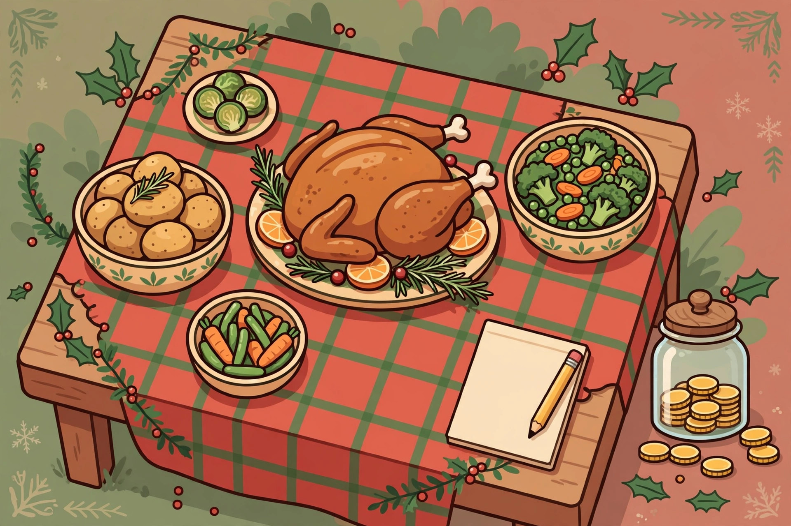
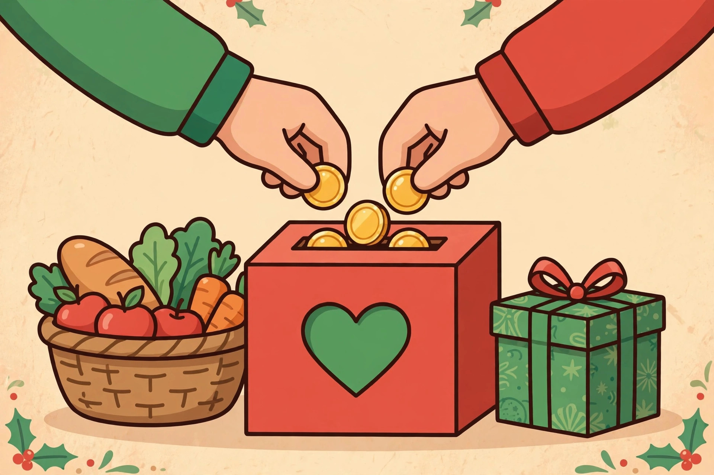
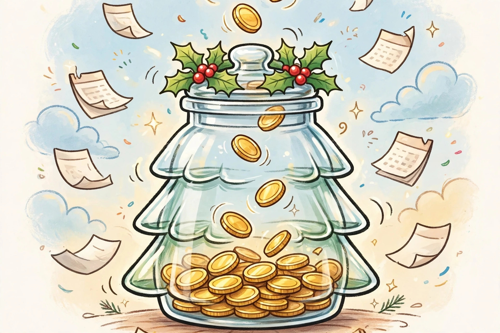
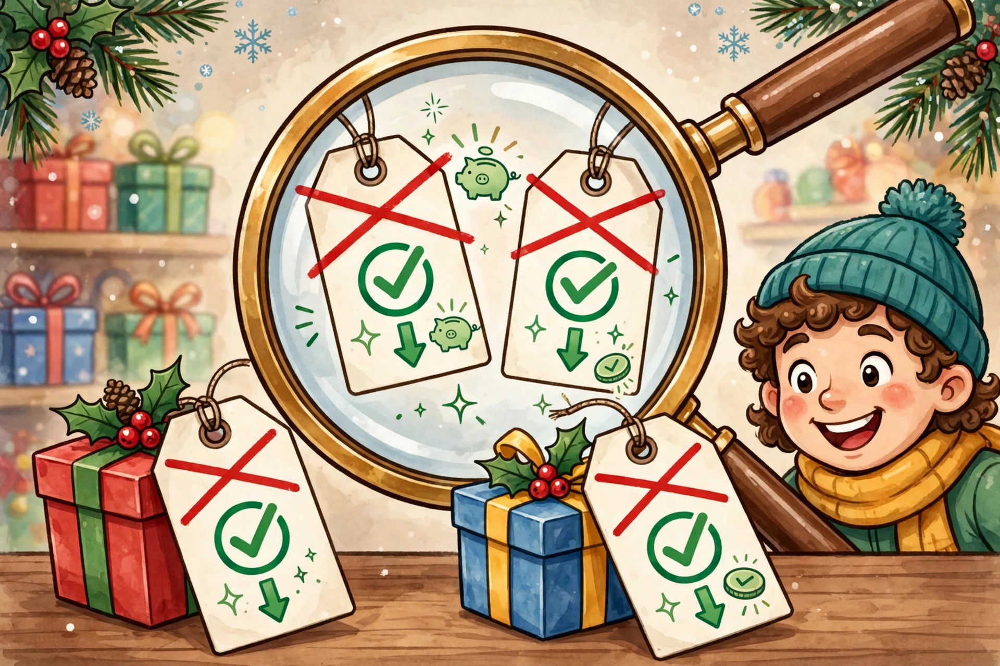

Budgeting for Christmas School Events, Concerts and Classroom Gifts in Canada
The December school bill itemised: $10 concert tickets, teacher gifts reconciled by role, the group-gift move, and a per-child envelope for one, two and three kids.
A kind, practical plan for holiday spending
The holidays don't have to mean a January hangover. Here you'll find simple, judgment-free guides: set a holiday number you can stick to, save a little each month with a sinking fund, tell a real deal from a fake one, and review it all in one calm hour when the season is over.
Start with your holiday number →The December school bill itemised: $10 concert tickets, teacher gifts reconciled by role, the group-gift move, and a per-child envelope for one, two and three kids.
Ten farm-bought real trees at $79–$119 a year against artificial trees at $109.99, $149 and $579.99 bought once — break-even years from prices retrieved in Canada.
Four Sunday check-ins, each with a different job, one pace number for spent vs season gone, and corrections ordered from reversible to final.
Inventory what you already own before buying anything new, price replacements with a one-in rule, and store it so next year starts at zero cost.
House party, night out, or quiet night in — each format gets priced line by line before December 31, not after the bill arrives.
Cards and stamps are one line item, not two surprises: current Canada Post rates, per-card math, and the mailing deadlines that decide the price.
A concrete first-two-weeks cash-flow reset for January: sequence the bills, protect the essentials, and restart the sinking fund.
Final-sale terms and spend-to-save offers are the day's real prices. A fixed envelope, a pre-written list, and the keep-it test.
The one-service rule prices the whole list in ten minutes. Build it in November, in priority order, with kind options for a tight year.
Fund a fixed sale-season envelope payday by payday, judge every deal on its all-in cost, and assign each purchase to the sale day where it belongs.
Tier every name, protect the top tier in full, convert the middle to draws and shared gifts, and tell the rest early — with the redistribution worked out in dollars.
The group-size cost math behind a name draw, a cap set from the bottom up, a dated organizer procedure, and kind fixes when someone overshoots or goes quiet.

Seasonal · FoodCost the meal per guest from dated Canadian research, build a food envelope from your guest list, compare cooking with a prepared meal, and buy in three stages.
Derive a per-child amount from your own holiday total, adjust it by age inside written bands, and keep siblings fair with one simple framework.

Seasonal · GivingWhat the 2026 donation tax credit actually returns on $100 or $300, when pooling or bunching helps, and a short December checklist that protects the receipt.
Pick one total that covers everything — gifts, food, travel, wrapping — based on what you actually have, not what you wish you had.

Step 2 · Save aheadTurn one big December bill into twelve small monthly transfers, so the money is already waiting when the season arrives.

Step 3 · Shop smartSale stickers can lie. Learn how to track prices yourself so you only buy when the discount is genuinely worth it.
Simple habits that keep December spending inside your means — so the new year starts fresh instead of owing.
One hour, one page, zero guilt. Turn this year's spending into next year's smarter plan.
Give travel its own all-in envelope: booking order for the routes that sell out first, honest connections, and a winter buffer that stays sacred.
One flat amount per child inside the home, one shared wish list split once across homes, and the costs that genuinely duplicate named and capped.
Price one extra guest from your own per-head cost instead of a flat percentage, and budget the mirror cost of accepting a late invitation yourself.
One dinner bill split four ways — equal households, per adult, per head, and with a host credit — so the method is agreed in October, not at the table.
Cap × headcount, one anchor per stocking, multi-packs split across stockings — and a filling procedure that keeps the small gifts small.
The shared-ingredient menu, the tally-to-package math, and the swaps that keep a full gift bake inside its number.